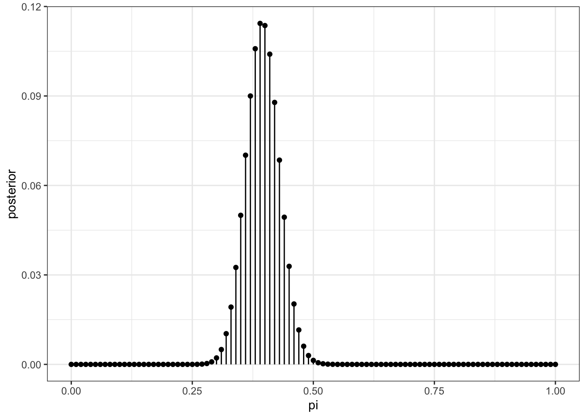
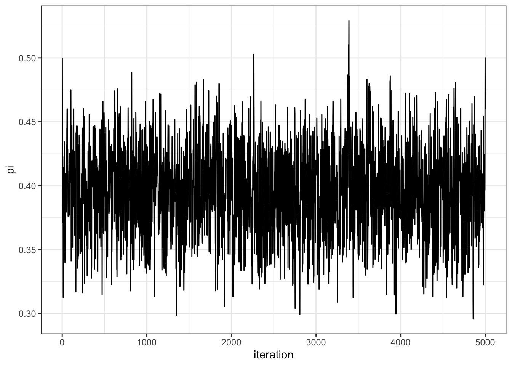
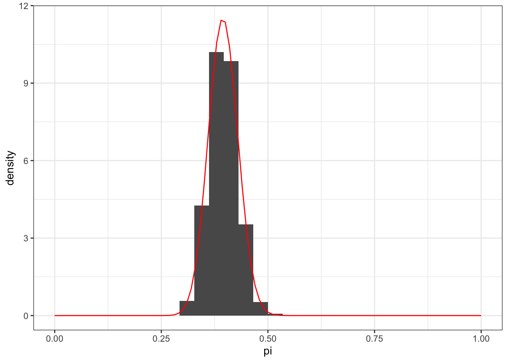

Lecture 14: Methods for Approximating the Posterior
Introduction
The purpose of this demo is to walk through different approaches for approximating the posterior distribution. We’ll consider the Beta-Binomial Bayesian model for Caitlin Clark’s field goal percentage (FG%) from previous lectures. As we already know, the Beta-Binomial is an example of a conjugate prior model such that the posterior distribution also follows a Beta with a simple calculation. However, we’ll imagine that we did not know this fact and will need to use procedures for approximating the posterior distribution. This will prepare us for scenarios where the posterior is actually too difficult to compute, but you’ll see how well these types of approximation can perform.
We will not actually load any data for this demo, instead we’ll just use the values from the Week 6 Beta-Binomial demo (beta_binomial.qmd). For our prior distribution, we’ll use the same Empirical Bayes prior based on the WNBA FG% statistics:
We’ll consider the observed data from the first 5 games of Clark’s rookie season, where she made \(y = 33\) of \(n = 85\) FG attempts. As a reminder, the likelihood function is Binomial:
\[
Y | \pi \sim \text{Binomial}(n = 85, \pi)
\]
You can keep in mind during this demo that the true posterior distribution for a Beta-Binomial conjugate model is simply:
We’ll first consider grid approximation, which proceeds in the following manner:
Step 1: define a grid of possible parameter values
The code chunk below sets up an initial grid of possible values for \(\pi\). There are technically an infinite number of values for \(\pi \in (0, 1)\), so it is ideal to produce a grid containing as many values as possible - but there is a computational trade-off at play. A larger grid will take longer to work with, but lead to a better approximation of the posterior. For demonstration purposes, we’ll consider a grid of 101 values:
library(tidyverse)# Step 1: Define a grid of 101 pi valuesgrid_data <-tibble(pi =seq(from =0, to =1, length =101))grid_data
We’re now ready to approximate the posterior using the product of the prior and likelihood. This involves first computing the unnormalized version (i.e., the numerator in the posterior formula), and then approximating the posterior by dividing the unnormalized version by the sum of values across the grid. This results in a discretized version of the posterior, with values that sum to 1 due to the normalization. The code chunk below performs these steps and then displays a visual of the approximate posterior distribution:
# Step 3: Approximate the posteriorgrid_data <- grid_data |>mutate(unnormalized = likelihood * prior, posterior = unnormalized /sum(unnormalized))# And now display the approx posteriorgrid_data |>ggplot(aes(x = pi, y = posterior)) +geom_point() +geom_segment(aes(x = pi, xend = pi, y =0, yend = posterior)) +theme_bw()

Step 4: sample from the discretized posterior
And finally, we can sample from our discretized posterior PDF to generate a posterior sample:
# Set seed for reproducibilityset.seed(2024)# Step 4: sample from the discretized posteriorposterior_sample <- grid_data |># Use the sample_n function to resample with replacement the parameter grid # data weighted by the posterior probability weightssample_n(size =10000, replace =TRUE, weight = posterior)
The following displays a histogram of the sampled parameter values on the density scale:
`stat_bin()` using `bins = 30`. Pick better value with `binwidth`.
Warning: Removed 2 rows containing missing values or values outside the scale range
(`geom_bar()`).
We can see that this does a pretty good job at capturing the true posterior distribution, with some variation around it since we’re dealing with a sample. Similar to your work in HW4, we can compute various summaries of the posterior via our sample:
# Compute various summaries of posterior sample:posterior_sample |>summarize(posterior_mean =mean(pi), posterior_median =median(pi),# Convenient function for mode:posterior_mode = bayesrules::sample_mode(pi),# 95% credible interval:lower_95 =quantile(pi, 0.025),upper_95 =quantile(pi, 0.975))
We’ll now consider the widely used Markov chain Monte Carlo (MCMC) approach for approximating the posterior. Similar to grid approximation, we can use MCMC to approximate the posterior without directly sampling from it. However, unlike grid approximation, MCMC samples are subsequent values that depend on the previously observed values - hence the chain.
To provide you with a walk-through of how MCMC works, we’ll implement the Metropolis-Hastings algorithm.
To start, we need a function that will produce a single iteration of the MCMC sequence of \(\pi\) values. This involves proposing a new value followed by the decision to accept it or not. we’ll call to produce a sequence of \(\pi\) values. The code chunk below initializes a function for a single step that uses the Uniform proposal model. Notice that since \(\pi\) is bounded, we’ll need to use a floor and ceiling to ensure the value is possible.
one_unif_iteration <-function(w, current){# STEP 1: Propose the next chain location proposal <-runif(1, min = current - w, max = current + w)# Use the right floor and cap for the value: proposal <-pmax(pmin(proposal, 1), 0)# STEP 2: Decide whether or not to go there (prior x likelihood) proposal_plaus <-dbeta(proposal, 45.9, 68.7) *dbinom(33, 85, proposal) current_plaus <-dbeta(current, 45.9, 68.7) *dbinom(33, 85, current) alpha <-min(1, proposal_plaus / current_plaus) next_stop <-sample(c(proposal, current), size =1, prob =c(alpha, 1- alpha))return(data.frame(proposal, alpha, next_stop))}
To demonstrate, we’ll run one iteration with the function using a window of 0.1 and starting with a value of 0.5:
set.seed(1)one_unif_iteration(0.1, 0.5)
proposal alpha next_stop
1 0.4531017 1 0.4531017
You can see that the proposal is 0.4531017, the acceptance probability is 1 and then we move to the proposed value based on the sample output at the end.
And now we can write a function to “tour” the posterior distribution via the Metropolis-Hastings algorithm:
mh_tour <-function(N, w, start_pi) {# 1. Start the chain at the initial given value current <- start_pi# 2. Initialize the simulation pi <-rep(0, N)# 3. Simulate N Markov chain stopsfor (i in1:N) { # Simulate one iteration sim <-one_unif_iteration(w = w, current = current)# Record next location pi[i] <- sim$next_stop# Reset the current location current <- sim$next_stop }# 4. Return the chain locationsreturn(data.frame(iteration =c(1:N), pi))}
We call this function below to generate a chain of 5000 values, using w = .1 and start_pi = 0.5:
set.seed(1979)mh_sim_1 <-mh_tour(N =5000, w =0.1, start_pi =0.5)
We’ll first display the trace plot for this simulation to display how the chain traverses the sample space of the plausible posterior \(\pi\) values:
mh_sim_1 |>ggplot(aes(x = iteration, y = pi)) +geom_line() +theme_bw()

Notice that this plot shows how the Markov chain moves across each step, with local dependence observed, but an overall random looking walk. If we ignore the longitudinal structure of these values, we can visualize the distribution of the MCMC samples to see how well it approximates the posterior:
`stat_bin()` using `bins = 30`. Pick better value with `binwidth`.
Warning: Removed 2 rows containing missing values or values outside the scale range
(`geom_bar()`).

As you can see, this approximates the posterior distribution extremely well! Even better than the grid approximation from early - which technically had more samples! Just like the grid approximation posterior, we can compute various summaries (like the mean, mode, percentiles for credible intervals, etc).
Just for the sake of demonstration, the following code chunk repeats the this MCMC sampling from above but uses independence sampling with a Beta distribution for the proposal distribution. We can again see how well this approximates the posterior distribution:
one_beta_iteration <-function(a, b, current){# STEP 1: Propose the next chain location proposal <-rbeta(1, a, b)# STEP 2: Decide whether or not to go there (prior x likelihood) proposal_plaus <-dbeta(proposal, 45.9, 68.7) *dbinom(33, 85, proposal) proposal_q <-dbeta(proposal, a, b) current_plaus <-dbeta(current, 45.9, 68.7) *dbinom(33, 85, current) current_q <-dbeta(current, a, b) alpha <-min(1, proposal_plaus / current_plaus * current_q / proposal_q) next_stop <-sample(c(proposal, current), size =1, prob =c(alpha, 1- alpha))return(data.frame(proposal, alpha, next_stop))}mh_beta_tour <-function(N, a, b, start_pi) {# 1. Start the chain at the initial given value current <- start_pi# 2. Initialize the simulation pi <-rep(0, N)# 3. Simulate N Markov chain stopsfor (i in1:N) { # Simulate one iteration sim <-one_beta_iteration(a, b, current)# Record next location pi[i] <- sim$next_stop# Reset the current location current <- sim$next_stop }# 4. Return the chain locationsreturn(data.frame(iteration =c(1:N), pi))}set.seed(2013)mh_sim_2 <-mh_beta_tour(N =5000, a =1, b =1, start_pi =0.5)# Create the plots:mh_sim_2 |>ggplot(aes(x = iteration, y = pi)) +geom_line() +theme_bw()